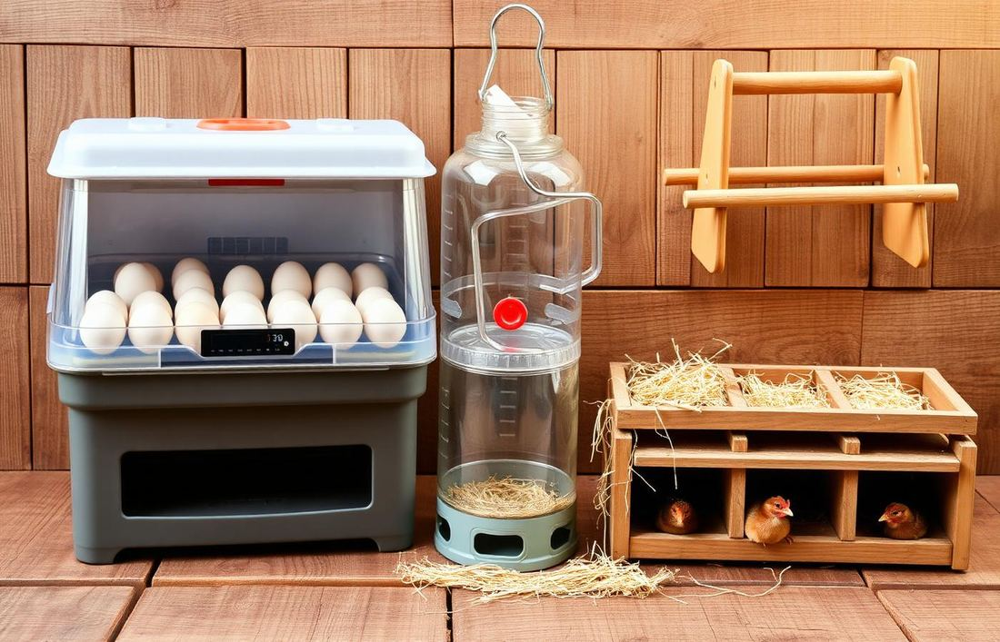
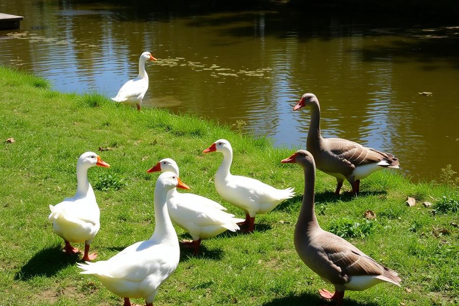
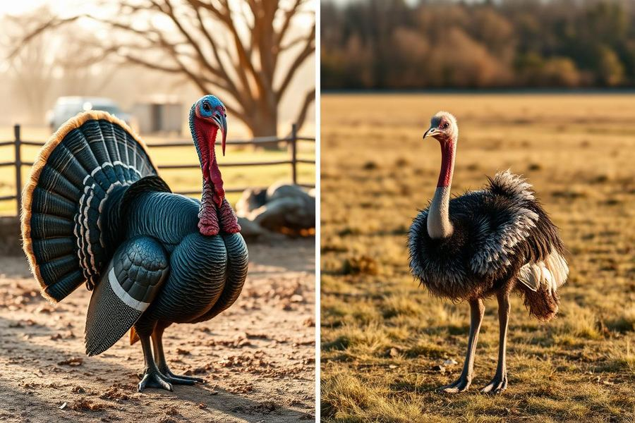
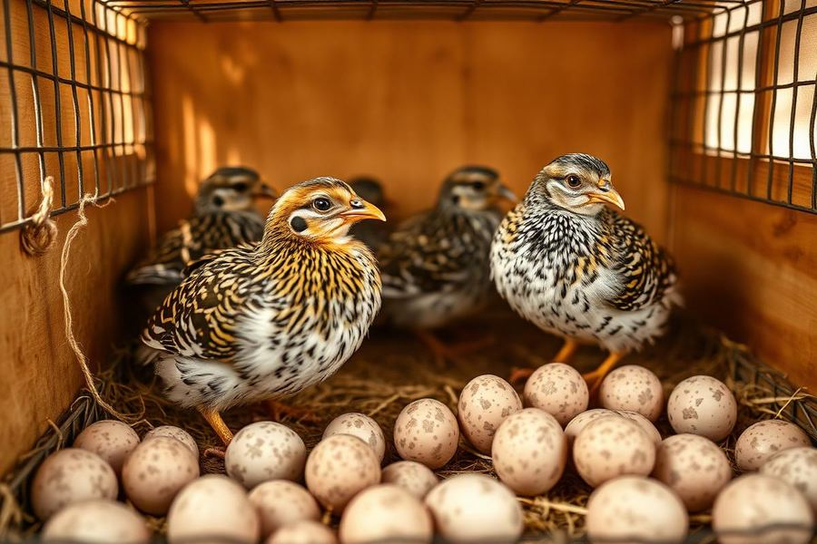
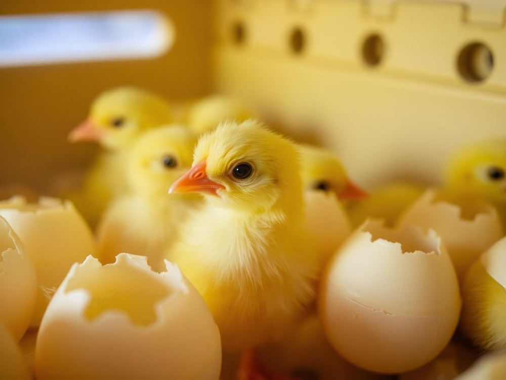
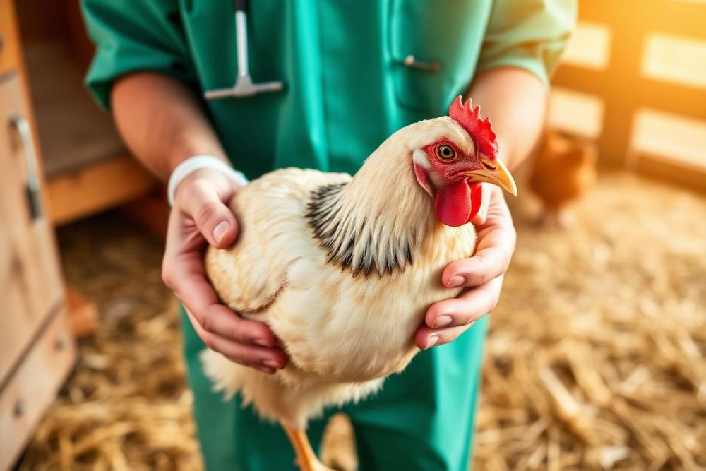
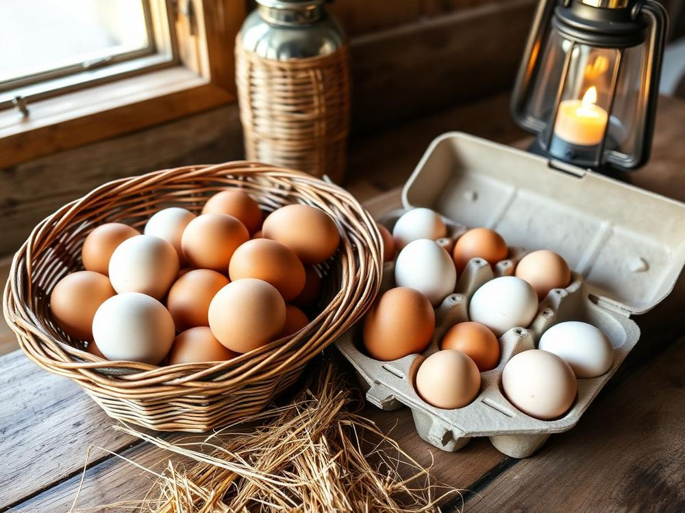

Do ovo ao galinheiro: um guia ilustrado da especialidade de Avicultura do Clube de Desbravadores — equipamentos, raças, alimentação, sanidade, incubação e o encanto da vida no campo.
Ponto de partida
Para conquistar a especialidade de Avicultura é preciso já ter cumprido a especialidade de Aves Domésticas. Ela é a base: apresenta a anatomia das aves, as diferenças entre espécies, os cuidados básicos de manejo e o vocabulário que será usado aqui.
Estude o material completo em: Especialidade de Aves Domésticas.
É a criação racional de aves domésticas para produção de carne, ovos, penas e pele, além da criação ornamental e de subsistência. Reúne genética, nutrição, sanidade, ambiência e manejo.
Avicultura de corte (frangos, perus, patos para carne) e avicultura de postura (galinhas poedeiras e codornas para ovos). Há ainda a criação de aves ornamentais e caipiras.
A ave é o animal de produção mais eficiente do planeta em conversão alimentar, ocupa pouco espaço e permite ao desbravador aprender responsabilidade, disciplina e respeito pela vida.
Requisito de identificação
Saber reconhecer cada peça — em fotos ou ao vivo — e entender para que ela serve é meio caminho andado para um manejo bem-sucedido.

Aparelho que substitui a galinha choca. Controla temperatura, umidade, ventilação e viragem dos ovos. Pode ser de mesa (dezenas de ovos) ou industrial (milhares). Permite produzir pintinhos o ano todo, sem depender da ave chocar.
Barras ou varas horizontais (madeira roliça, 4–5 cm) onde as aves dormem. Ficam a 50–80 cm do chão, com 15–20 cm de espaço por ave. O poleiro protege do frio e da umidade do piso, evita parasitas e reduz brigas.
O galpão ou galinheiro onde as aves vivem. Deve ter boa ventilação, telhado que proteja de sol e chuva, cama seca (maravalha, casca de arroz), telas contra predadores e orientação leste–oeste para reduzir o calor.
Fornece água limpa e fresca à vontade. Tipos: sifão (pressão), calha, pendular e nipple (chupeta). A ave consome cerca de 2 litros de água para cada quilo de ração — água suja é a porta de entrada de doenças.
Tubular, de calha ou bandeja (para pintinhos). Deve ser regulado na altura do dorso da ave para evitar desperdício e ter espaço suficiente para todas comerem juntas (cerca de 5–10 cm por ave).
Caixa escura, arejada e forrada com palha ou maravalha onde a poedeira põe os ovos. Regra prática: 1 ninho para cada 4 a 5 galinhas, instalado em local baixo e tranquilo. Ninho limpo = ovo limpo.
Um ovo falso de louça ou gesso colocado no ninho ensina as poedeiras jovens onde botar — truque antigo que funciona até hoje. Já a "cama" do aviário, depois de curtida, vira um dos melhores adubos orgânicos que existem.
Espécies e aptidões
Cada raça foi selecionada por gerações para uma finalidade: carne, ovos, penas ou pele. Conhecer a aptidão evita frustração na criação.
| Espécie | Raças | Características | Aptidão |
|---|---|---|---|
| Pato | Pequim (branco, corpo maciço) Indian Runner (ereto, "pato-garrafa") |
O Pequim cresce rápido e rende carcaça pesada; o Indian Runner é excelente poedeiro e caminha em pé, quase vertical. | CarneOvosPenas |
| Frango | Leghorn branca (poedeira) Rhode Island Red / Plymouth Rock (dupla aptidão) Cobb e Ross (linhagens de corte) |
A Leghorn põe mais de 280 ovos brancos por ano; a Rhode Island Red serve para ovo e carne; as linhagens de corte atingem o abate em cerca de 42 dias. | OvosCarne |
| Ganso | Toulouse (cinza, corpulento) Embden (branco, porte alto) |
Ambos são grandes produtores de carne e de penugem nobre. O ganso também é excelente "vigia" do quintal: alerta com grasnados a qualquer estranho. | CarnePenas / penugem |
| Codorna | Japonesa (Coturnix japonica) — postura Europeia/Gigante (Coturnix coturnix) — corte |
A japonesa começa a botar aos 35–42 dias e produz até 300 ovinhos por ano; a europeia é maior, criada para carne. | OvosCarne |
| Peru | Branco Holandês (Large White) Bronzeado (Bronze Americano) |
O Branco Holandês é a base da produção comercial, com peito largo e pele limpa; o Bronzeado é rústico, ótimo para criação caipira. | Carne |
| Avestruz | Pescoço Azul (African Black / Blue Neck) Pescoço Vermelho (Red Neck) |
O African Black é dócil e o mais criado comercialmente; o Red Neck é maior e mais arisco. Fornecem carne vermelha magra, couro nobre e plumas. | CarneCouroPlumas |



A cor da casca do ovo é indicada pela cor do lóbulo da orelha da galinha: lóbulo branco costuma indicar ovo branco (Leghorn); lóbulo vermelho, ovo marrom (Rhode Island Red). Nutricionalmente, os dois são iguais.
Do ovo ao adulto
A ração acompanha a idade da ave: quanto mais nova, mais proteína e energia por grama de alimento. Água limpa e fresca deve estar disponível 24 horas por dia em todas as fases.
O pintinho ainda absorve o saco vitelino, mas deve receber água morna e limpa imediatamente e ração inicial farelada em bandejas rasas. Aquecimento (campânula) a 32–34 °C na primeira semana, reduzindo cerca de 3 °C por semana.
Ração pré-inicial/inicial com 20–23% de proteína bruta, farelada ou micropeletizada, à vontade. Luz por 20–23 h/dia nos primeiros dias estimula o consumo.
Ração de crescimento com 18–20% de proteína. É aqui que se forma o esqueleto e a musculatura. Pode-se iniciar o acesso a piquete/pasto nas criações caipiras.
Ração de recria com 15–16% de proteína, controlada para a franga não engordar. Peso e uniformidade do lote são monitorados semanalmente.
Ração de postura com 16–18% de proteína e 3,5–4% de cálcio (calcário e conchas moídas) para casca firme. Luz de 16 h/dia sustenta a produção.
Ração de engorda/terminação com 17–19% de proteína e mais energia. Respeitar o período de retirada de aditivos antes do abate.

As aves não têm dentes: engolem grit (areia grossa ou pedrisco) que fica na moela e tritura os grãos. Poedeiras precisam ainda de conchas ou calcário grosso à noite, quando a casca se forma.
Relatório de sanidade
A ave doente se isola, arrepia as penas, para de comer e a crista fica pálida. Observar o lote todos os dias, no mesmo horário, é a melhor ferramenta de diagnóstico que existe.
| Problema | Sinais e sintomas | Prevenção | Tratamento |
|---|---|---|---|
| Doença de Newcastle viral |
Espirros, respiração ofegante, torcicolo, paralisia das pernas e asas, diarreia esverdeada, queda brusca na postura. | Vacinação obrigatória, quarentena de aves novas, biosseguridade rígida. | Não há cura. Isolar, notificar o serviço veterinário oficial e eliminar o foco (doença de notificação obrigatória). |
| Bronquite infecciosa viral |
Tosse, estertores, secreção nasal, ovos deformados e de casca fina, clara aguada. | Vacinação e boa ventilação sem correntes de ar frio. | Suporte: aquecimento, vitaminas e antibiótico apenas contra infecções bacterianas secundárias. |
| Gumboro (bursite infecciosa) viral |
Prostração, penas arrepiadas, diarreia esbranquiçada, bicar a própria cloaca, mortalidade em pintos de 3–6 semanas. | Vacinação e limpeza rigorosa — o vírus é muito resistente no ambiente. | Sem tratamento específico: hidratação, eletrólitos e vitaminas. |
| Coccidiose parasitária |
Diarreia com sangue ou mucosa, penas eriçadas, apatia, atraso no crescimento. | Cama seca, evitar superlotação, coccidiostático na ração, vacina. | Anticoccidianos (sulfas, amprólio) na água, sob orientação veterinária, e troca da cama úmida. |
| Coriza infecciosa bacteriana |
Inchaço da face e seios nasais, secreção com odor forte, olhos fechados, queda de consumo. | Vacinação, lote de idade única, ventilação, desinfecção. | Antibióticos (sulfas, tetraciclinas) prescritos, com apoio de vitaminas. |
| Salmonelose (pulorose / tifo) bacteriana |
Pintos com diarreia branca grudada na cloaca, mortalidade alta na 1ª semana; adultos abatidos e com crista escura. | Comprar pintos de matrizes certificadas, higienizar incubadora, controlar roedores. | Antibióticos reduzem perdas, mas as aves ficam portadoras; o recomendado é eliminar o lote positivo. |
| Bouba aviária (varíola) viral |
Nódulos e crostas na crista, barbelas e face; forma úmida com placas na boca e dificuldade de respirar. | Vacinação pela membrana da asa e controle de mosquitos, que transmitem o vírus. | Limpar as lesões com iodo glicerinado, isolar as aves e reforçar vitaminas A e C. |
| Piolhos e ácaros ectoparasitas |
Coceira constante, penas quebradas, anemia (crista pálida), aves inquietas à noite, queda de postura. | Banho de areia à disposição, caiação do galinheiro, limpeza dos poleiros e frestas. | Pós e sprays inseticidas próprios para aves, repetidos em 7–10 dias, aplicados também no ambiente. |
| Vermes intestinais endoparasitas |
Emagrecimento com bom apetite, penas sem brilho, diarreia, às vezes vermes visíveis nas fezes. | Rodízio de piquetes, cama seca, água limpa. | Vermífugos aviários periódicos, respeitando a carência para consumo dos ovos. |
| Canibalismo e bicagem comportamental |
Feridas na cloaca, no dorso e nas penas; aves feridas viram alvo do bando. | Reduzir a densidade, diminuir a intensidade da luz, dar ração equilibrada em proteína e sal, oferecer objetos de distração. | Separar imediatamente as aves feridas, tratar com repelente cicatrizante e corrigir a causa ambiental. |
| Estresse térmico ambiental |
Bico aberto, asas afastadas do corpo, prostração, queda de consumo e de postura. | Sombra, ventilação, telhado isolado, água fresca, alimentar nas horas frescas. | Molhar o telhado, aumentar a ventilação e usar eletrólitos na água. |

Chocadeira
Na incubadora de ar forçado a regra geral é 37,5 °C com umidade de 55–60%, subindo para 65–75% nos últimos três dias (fase de eclosão), quando se para de virar os ovos.
| Espécie | Temperatura | Umidade (1ª fase) | Umidade (eclosão) | Dias |
|---|---|---|---|---|
| Frango | 37,5 °C | 55–60% | 65–70% | 21 dias |
| Pato (comum) | 37,5 °C | 55–65% | 70–80% | 28 dias (Mudo/Barbary: 33–35) |
| Ganso | 37,4–37,5 °C | 60–65% | 75–80% | 28–34 dias (média 30) |
| Codorna (japonesa) | 37,5 °C | 55–60% | 65–70% | 17–18 dias |
| Peru | 37,5 °C | 55–60% | 65–70% | 28 dias |
| Avestruz | 36,0–36,5 °C | 20–30% | 35–40% | 42 dias (39–45) |
Vire os ovos de 3 a 5 vezes ao dia (número ímpar), em ângulo de 45°, até três dias antes da eclosão. Isso impede que o embrião grude na membrana da casca.
Por volta do 7º e do 14º dia, ilumine o ovo no escuro: veias vermelhas em teia indicam embrião vivo; ovo totalmente claro é infértil; anel vermelho ou mancha escura solta indica embrião morto — retire-o.
Use ovos limpos, íntegros, de formato normal e com até 7 dias de armazenamento, guardados a 15–18 °C com a ponta fina para baixo. Não lave: isso remove a cutícula protetora.
O ovo de avestruz é o maior do mundo: pesa entre 1,2 e 1,8 kg e equivale a cerca de 24 ovos de galinha. Já o ovo de codorna pesa só 10 a 12 gramas — dá para levar uma dúzia no bolso.
Do ninho à mesa
Mergulhe o ovo num copo com água: afunda deitado = fresco; fica em pé no fundo = mais velho, mas ainda bom; boia = descarte. Com o tempo a câmara de ar aumenta e o ovo flutua.
Contra a luz, o ovo bom mostra câmara de ar pequena e clara uniforme; manchas escuras, sangue ou conteúdo movediço reprovam. Quebrado no prato: a gema alta e centrada com clara densa indica frescor — gema achatada e clara aguada, ovo velho.
Ovo podre tem odor forte de enxofre (gás sulfídrico) e às vezes casca esverdeada ou com vazamento. Ao menor sinal, descarte longe da criação — nunca prove.

| Jumbo | a partir de 66 g |
| Extra | 60 g ou mais |
| Grande | 55 g ou mais |
| Médio | 50 g ou mais |
| Pequeno | 45 g ou mais |
| Industrial | abaixo de 45 g |
Colete 2 a 3 vezes por dia. Ovos apenas sujos de poeira devem ser limpos a seco (lixa fina ou pano). Se precisar lavar, use água mais quente que o ovo (cerca de 40 °C) e seque na hora.
Guarde na cartela com a ponta fina para baixo, em local fresco (8–15 °C) e ventilado, longe de cebola, peixe e produtos de limpeza — a casca é porosa e absorve odores.
Cartelas identificadas com origem, data de postura e validade; ovos uniformes em tamanho e cor; transporte protegido de choque e calor. Validade usual: 28 a 30 dias após a postura.
Mão na massa
A parte prática da especialidade: criar aves da sua escolha até o completo desenvolvimento, registrando tudo em um diário de bordo.
Galinheiro limpo e desinfetado, cama de 5 cm, campânula testada, comedouro e bebedouro higienizados, ração inicial comprada.
Calor de 32–34 °C na 1ª semana (−3 °C por semana), ração inicial à vontade, água trocada 2× ao dia, pesagem semanal.
Retirada gradual do aquecimento, ração de crescimento, ampliação da área, acesso ao piquete e primeiro vermífugo se indicado.
Ração de recria/terminação, poleiros e ninhos instalados, controle de peso e observação diária de sanidade.
Bem-estar animal: respeite as cinco liberdades — livre de fome e sede, de desconforto, de dor e doença, de medo e estresse, e livre para expressar seu comportamento natural.
Relatório
A avicultura é a atividade zootécnica que cria aves domésticas para produzir carne, ovos, penas e pele, e ocupa hoje um lugar estratégico na alimentação mundial. Nenhuma outra proteína animal reúne tantas vantagens: a ave converte alimento em carne com enorme eficiência — cerca de 1,6 a 1,8 kg de ração para cada quilo de peso vivo —, cresce depressa, exige pouca área e produz o ano inteiro. O resultado é uma proteína de alto valor biológico, acessível e presente em praticamente todas as culturas e religiões, o que amplia o alcance social da atividade.
Suas principais características são o ciclo curto de produção (um frango de corte está pronto em cerca de 42 dias; uma poedeira inicia a postura com 18 semanas), a alta tecnificação, a integração entre indústria e produtor rural, o forte controle sanitário e genético e a possibilidade de ser praticada tanto em larga escala quanto no fundo do quintal. A cadeia envolve incubatórios, fábricas de ração, granjas de matrizes, granjas comerciais, abatedouros, transporte e comércio, gerando milhões de empregos diretos e indiretos.
No Brasil, a avicultura tem peso econômico enorme: o país é um dos maiores produtores de carne de frango do mundo e o maior exportador, atendendo mais de 150 destinos. Além disso, a avicultura familiar garante segurança alimentar em pequenas propriedades, aproveita restos de hortas e grãos, fornece adubo orgânico de excelente qualidade e complementa a renda da família rural.
Há ainda uma dimensão formativa e espiritual. Cuidar de aves ensina rotina, observação, paciência e responsabilidade — a criação depende de alguém que chegue todos os dias, na chuva ou no sol. Para o desbravador, a avicultura é também um exercício de mordomia: administrar com zelo a vida que Deus confiou ao ser humano, tratando cada criatura com respeito e cuidado.
Atividade de campo
Nada substitui ver de perto. A visita a uma granja ou sítio que cria aves fecha o estudo.
A galinha doméstica descende do galo-banquiva do Sudeste Asiático e é a ave mais numerosa da Terra — são mais de 25 bilhões delas. Galinhas reconhecem mais de cem rostos diferentes, sonham enquanto dormem e "conversam" com os pintinhos ainda dentro do ovo, dois dias antes da eclosão. E o galo canta ao amanhecer porque possui um relógio biológico interno: mesmo no escuro total, ele canta na hora certa.